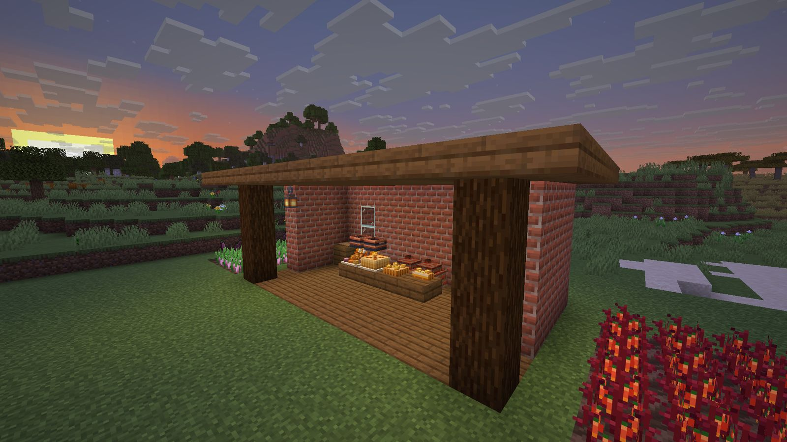

 Full Course
Full Course
No more hunger. Food is a choice, and the more work a dish takes, the stronger and longer its benefits.
Free to use in any modpack. Modpack makers: use the CurseForge download. GitHub Releases is for manual installs and testing.
How it plays
- No hunger. The food bar is gone. Sprinting always works, and health comes back on its own a few seconds after the last hit.
- Eat for benefits. Food heals over a few seconds and, from one star up, fills a meal slot with benefits: more health, damage, armor, speed, mining speed and more.
- Cook for more. A dish's tier comes from its recipe chain. Steps, stations and ingredients raise it, and each tier gives more benefits, at a higher level, for longer.
- Taste everything. Tasting different dishes opens a third, fourth and fifth meal slot. The Tasting Journal shows what you've had and what's next.
- Share a feast. Feasts are placed on the table and served to everyone: the top tier, for the whole group.
The full guide has every number.
A real kitchen
Cutting Board
Put food on it and cut it with a knife: flour, chopped vegetables, minced meat, fish fillets.
Cooking Pot
Up to six ingredients over a heat source, such as a lit campfire: stews, soups, jams.
Brick Oven
Bakes with fuel, like a furnace: pies, bakes, Nether Flatbread and the feasts.
Fermenting Crock
Seal it and wait half a day: butter, cheese, sweet cream, pickles.
Screenshots


Every food counts
Full Course rates every food in the game from its recipes, other mods' foods too, so it needs no list of supported mods. A Farmer's Delight stew, a vanilla cake and a modded pie all get a tier and benefits from what goes into them. Farmer's Delight, JEI, AppleSkin and Cooking for Blockheads get more than that: see compatibility.
Requirements
- Minecraft 26.3, Java 25.
- NeoForge 26.3.0.89 or later. Nothing else is needed.
- Fabric: Fabric Loader 0.19.5 or later and Fabric API 0.161.0+26.3 or later. Nothing else is needed.
- Install it on the client, and on the server too when you play on one.
- It takes the place of the vanilla food bar, so it doesn't belong in a pack with another mod that reworks hunger.